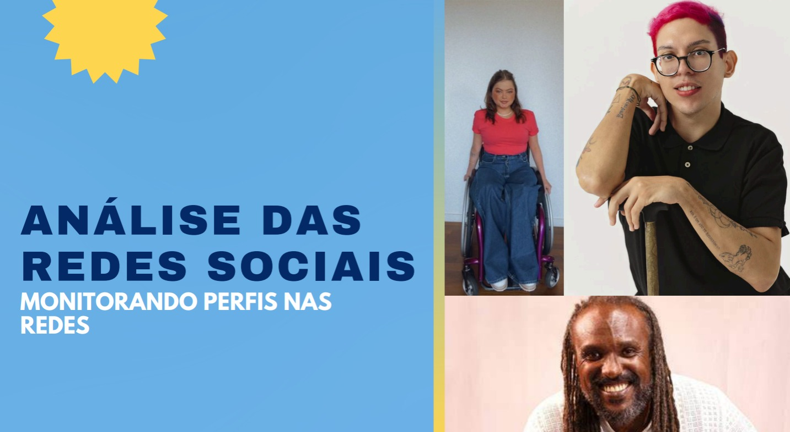
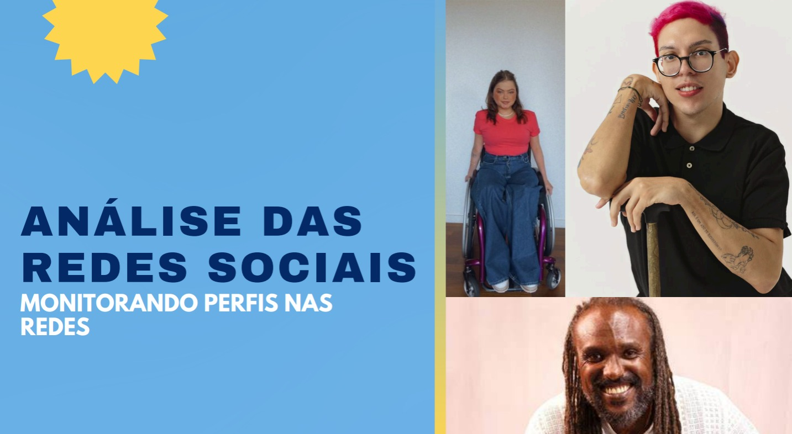

Atividade favorita de Sociologia
 

Essa tarefa foi bastante legal porque permitiu eu e mais pessoas do grupo, a analisar como as redes sociais são usadas para promover causas sociais, especialmente sobre inclusão e diversidade. Ela conecta o estudo de movimentos sociais à sociologia, ao explorar como essas plataformas influenciam a conscientização pública, geram debates e refletem questões de cidadania, direitos humanos e desigualdade.